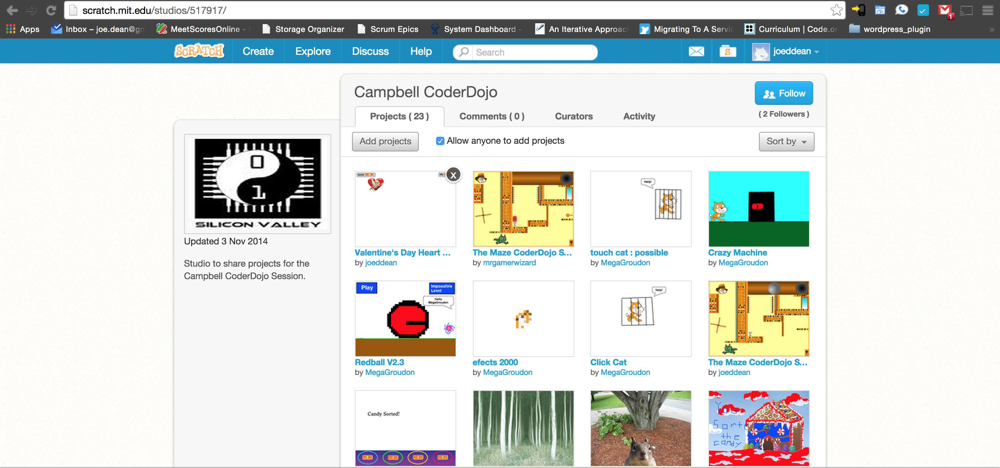
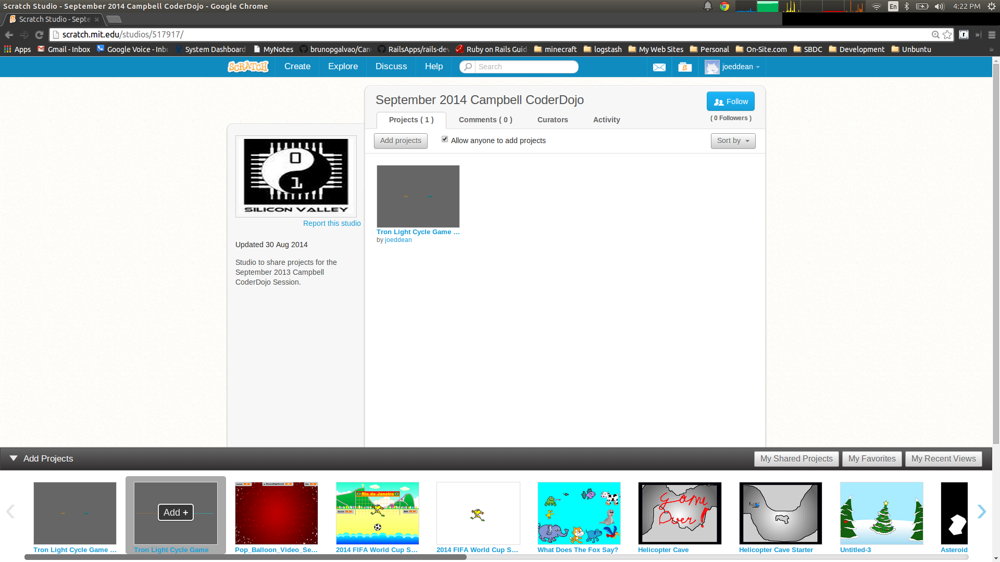

Go To: scratch.mit.edu/studios/517917/

Click "See Inside" Button

Go To: scratch.mit.edu/studios/517917 And Add Project To Share

Scratch Challenges
- Make a scratch Valentine's Card
- Add a high score cloud variable
- Add levels
Thanks
Thank @onsitedotcom for the food and space
My Contact Info
- Email: joe.dean@gmail.com
- Twitter: @joeddean
/